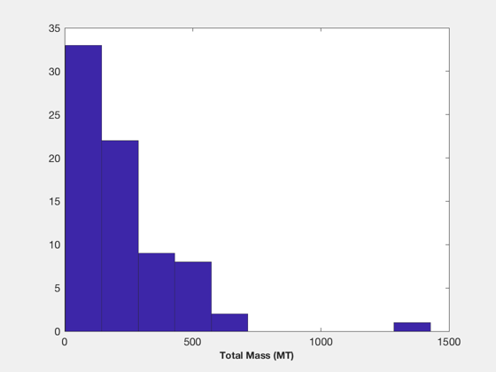
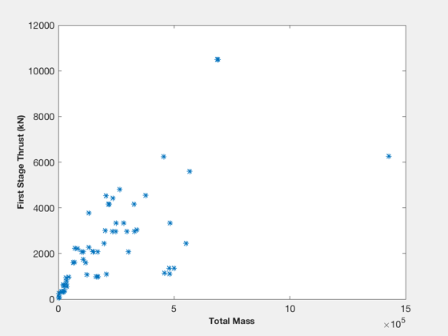
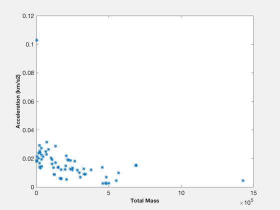
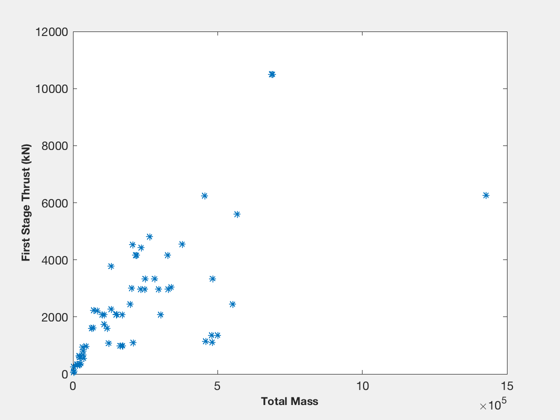
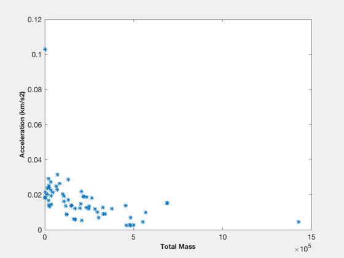

Histograms of all available launch vehicle models
Compute the burnout velocity and displau histograms of velocity, mass, and thrust.
Contents
%-------------------------------------------------------------------------- % Copyright (c) 2010, 2012 Princeton Satellite Systems, Inc. % All rights reserved. %--------------------------------------------------------------------------
Loop through the vehicle database
cases = RocketDatabase; vbo = zeros(1,length(cases)); mT = vbo; Isp = vbo; Thr = vbo; % Store the database to prevent reloading it on every step lv = ReadCSVTable('LVDatabase.csv'); for k = 1:length(cases) disp(cases{k}); rocketModel = RocketDatabase( cases{k}, lv ); vbo(k) = BurnoutVelocity(rocketModel); mT(k) = rocketModel.mTotal; Isp(k) = rocketModel.Isp(1); Thr(k) = rocketModel.thrust(1); end
peacekeeper minutemaniii pegasus examplerocket modifiedhalfpegasus mslv princetonsatdemo princetonsatdemowithsrb blackbrantx VLS-1 VLM Long March 2E Long March 2F Long March 3 Long March 3A Long March 3B Long March 3C Long March 4B Ariane 5ECA Ariane 5ECB Ariane 5ES Ariane 5G Ariane 44L Vega GSLV Mark 1 GSLV Mark 2 PSLV H-IIA 202 H-IIA 204 M-V Angara 1.1 Angara 1.2 Kosmos 3M Strela Angara A3 Angara A5 Dnepr-1 Molniya Rockot Shtil Soyuz 2 Soyuz FG Soyuz U Volna Proton K Block DM Proton M Breeze M Start-1 Atlas IIAS Warning: Fractional stages are not allowed. Truncating number of stages to the next lowest integer. Atlas IIIA Atlas IIIB Atlas V 401 Atlas V 501 Delta IV Heavy(2) Delta IV Medium Delta IV Medium(2) Delta IV Medium(4) Falcon I Falcon Heavy K-1 Space Shuttle Titan II Titan IV B Athena 1 Delta II 7326 Delta II 7425 Delta II 7925 MinuteMan III Peacekeeper Pegasus XL Scorpius Athena 2 Minotaur Taurus Commercial Taurus SSLV Taurus XL
Plots
NewFig('Total Mass'); hist(mT*1e-3); XLabelS('Total Mass (MT)') NewFig('Burnout Velocity'); hist(vbo); XLabelS('Burnout Velocity (km/s)') NewFig('Thrust vs. Mass') plot(mT,Thr,'*') XLabelS('Total Mass') YLabelS('First Stage Thrust (kN)') NewFig('Acceleration') plot(mT,Thr./mT,'*') XLabelS('Total Mass') YLabelS('Acceleration (km/s2)') %-------------------------------------- % PSS internal file version information %--------------------------------------
  
 